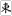
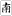

中国麻将０８・左右対称牌
我打麻将 投稿日：2008/12/05(Fri)
「左右対称な牌のみ」に、推不倒にあやかった名前をつけたいんですが、なにかいい名前ありますか?
推不倒が8点なら、これは6点ぐらいで。
※ ぐらいは認めますかね? それとも厳しく、字牌は
のみでいきましょうか?
あさみ 投稿日：2008/12/05(Fri)
なーるほろ、上下対象ではなく左右対称ですか。（^-^；
洋風 中国風など、いくつか考えてみました。
牌の名称 役名
ロール牌 ロールシャッハ
ジェミニ牌 ジェミニ
シンメトリー シンメトリー
双喜牌（ソヮシーハイ） 紅双喜（ホンソヮンシー）
鏡同牌（チントンハイ） 鏡同形（チントンシャン）少し訛ってます(>_<)
屏風牌（びょうぶハイ） 屏風（びょうぶ）>※
推不倒牌以外では」と、そして が対象と思いますが、そうなると増えるのは３種類だけ
（固く考えると は左右対称ではないので、増えるのは２種類だけ）。
そこで６点役の場合は推不倒に
ここに）まで入った場合は２点...（^-^；